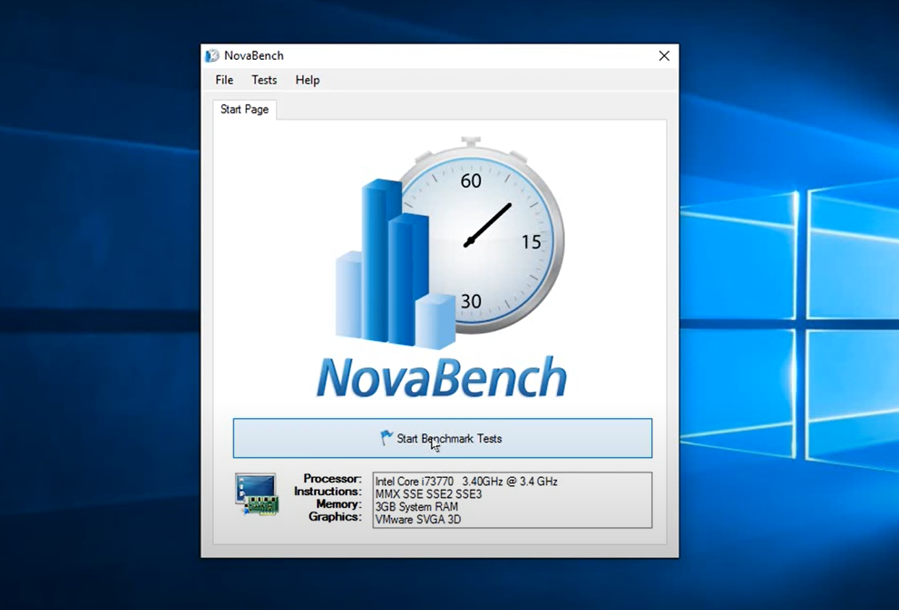

Έχοντας συναρμολογήσει τον υπολογιστή μας, με τα εξαρτήματα hardware που επιθυμούμε, και με την εγκατάσταση των windows, μένει μόνο να διαπιστώσουμε εάν όλα στον υπολογιστή μας λειτουργούν σωστά και με την απόδοση που θέλουμε να έχουν. Αυτό μπορεί να γίνει με την χρήση ενός προγράμματος benchmark. Το Benchmark είναι ουσιαστικά η χρήση του ειδικού προγράμματος το οποίο αξιολογεί την απόδοση ενός αντικειμένου του υπολογιστή, συνήθως hardware αλλά καμία φορά και software. Αυτό που μας ενδιαφέρει τώρα και θα αναλύσουμε είναι η απόδοση των hardware αντικειμένων που χρησιμοποιήσαμε στην συναρμολόγηση του υπολογιστή μας.
Υπάρχουν πολλά προγράμματα που μπορούμε να χρησιμοποιήσουμε, άλλα δωρεάν και άλλα επί πληρωμή. Παρ'όλ'αυτά θα αναλύσουμε ένα που προτιμάμε και θεωρείται εύκολο στη χρήση και αποδοτικό, το Novabench benchmark πρόγραμμα. Βίντεο με αναλυτικά βήματα για την εγκατάσταση και χρήση του προγράμματος μπορείτε να δείτε εδώ .
Αρχικά μπαίνουμε στην ιστοσελίδα της Novabench και πατάμε κλικ στο πλαίσιο "Download Now" επιλέγοντας, στη συνέχεια, λήψη για windows ή όποιο λειτουργικό έχουμε. Κατόπιν, εκτελούμε το πρόγραμμα και κατεβάζουμε ένα επιπλέον αρχείο εάν μας ζητηθεί (.Net Frame
work) και αποδεχόμαστε τους όρους για να συνεχίσει η λήψη. Μόλις γίνει εγκατάσταση όλων των αρχείων και του προγράμματος θα ανοίξει αυτόματα το πρόγραμμα και θα εμφανιστεί το παρακάτω παράθυρο.  Πατάμε κλικ στην επιλογή έναρξη
του τέστ και το πρόγραμμα ξεκινάει να "διαβάζει" με τη σειρά τα εξαρτήματα (Μητρική, Επεξεργαστή-CPU, Κάρτα γραφικών-GPU, Μνήμη RAM, σκληρός δίσκος). Στη συνέχεια, εμφανίζεται η βαθμολογία για κάθε ένα εξάρτημα την οποία
μπορούμε να συγκρίνουμε το αποτέλεσμα και με άλλους χρήστες του προγράμματος.Η βαθμολογία αυτή αντιπροσωπεύει την απόδοση των εξαρτημάτων με αύξουσα σειρά.
Για να δείτε βίντεο με αναλυτικά βήματα εγκατάστασης και χρήσης των παρακάτω επιπλέον προγραμμάτων
πατήστε εδώ:
1. CineBench
2. Heaven
3. 3DMark
4. FRAPS
5. FRAFS
Με το MSI afterburner μπορούμε να μετρήσουμε θερμοκρασίες fps και άλλες σημαντικές πληροφορίες για το σύστημά μας καθώς κάνουμε μια εργασία στον υπολογιστή ή παίζουμε ένα παιχνίδι
λεπτομέρειες για την χρήση αυτού του λογισμικού μπορείτε να βρείτε εδώ: